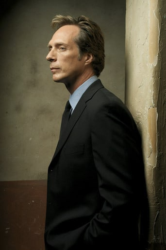
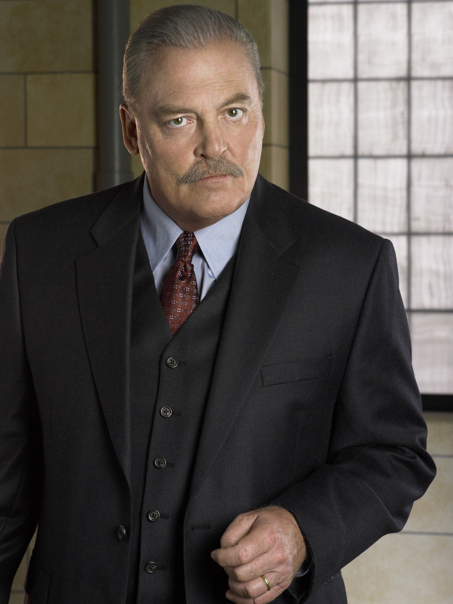

Actor: Wentworth Earl Miller III
Born on 2nd July in 1972, Chipping Norton, United Kingdom.
Rol in the serie: He is the main character in the serie. He wants to save his brother from the sentenced to death and makes a plan to escape from the prison and save him.
Actor: Dominic Haakon Myrtvedt Purcell
Born on 17th February in 1970, Wirral, United Kingdom.
Rol in the serie: He is sentenced to death because some important people say that he killed the 1st minister's brother. He will try to survive as long as he can to show his innocence.
Actor: Sarah Anne Wayne Callies
Born on 1st June in 1977, Illinois, USA
Rol in the serie: She is the prison doctor, but she sees strange things happened and tries to help Michael and Lincoln.
Actor: Amaury Nolasco Garrido
VBorn on 24th December in 1970, Puerto Rico
Rol in the serie: He is Michael's prison partner and he helps him to prepare everything he needs to escape from the prison.
Actor: Rolf Peter Ingvar Storm
Born on 27th August in 1953, Närke, Sweeden
Rol in the serie: He is a mobster and Michael needs his help to get a car after he escapes from the prison.
Actor: Robert Lyle Knepper
Born on 8th July of 1959, Ohio, USA
Rol in the serie: He is one of the worst prisoners and discovers Michael's plan and he makes blackmail to him by saying the guards about the plan.
Actor: Rockmond Dunbar
Born on 11th January of 1973, California, USA
Rol in the serie: At the begining Franklin isn't part of the escape plan but he heard some things and tries to be involved on it.
Actor: Wade Andrew Williams
Born on 24th December of 1961, Oklahoma, USA
Rol in the serie: He is in charge of all the prison guards and also the warden's right hand. He hates Michael from the first day.
Actor: William Edward Fichtner
Born on 27th November of 1956, New York, USA
Rol in the serie: He is he who is in charge of the investigation to take a copy of the prisoners escaped from the prison, and to the grave intelligence of the prison and goes to the ground.
Actor: Paul Adelstein
Born on 29th April in 1969, Illinois, USA
Rol in the serie: He wants Lincoln dead and he will do everything for that happens
Actor: Walter Stacy Keach, Jr.
Born on 2nd June of 1941, Savannah, USA
Rol in the serie: He is the prison Warden and he wants to know everything on his prison, but he can't see Michael's plan.
